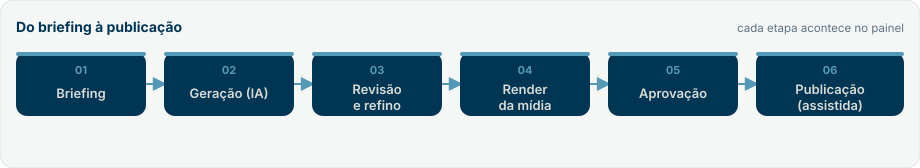
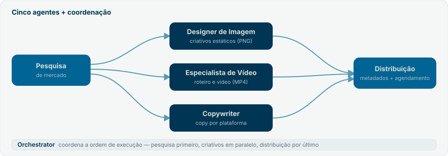
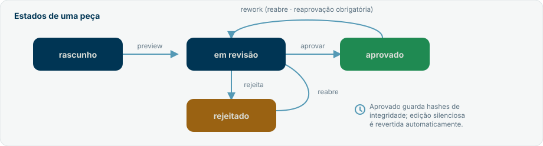
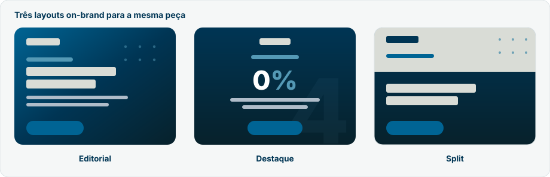

Guia de Uso — Equipe de Marketing 4Selet
Manual operacional do sistema de marketing com IA da 4Selet. Documento vivo: descreve como o sistema funciona e como operá-lo em qualquer campanha ativa.
O Painel web é o caminho principal — uma interface visual onde você cria, revisa e aprova conteúdo com cliques, sem digitar prompts. A extensão Claude Code no VSCode é o caminho secundário, para automações avançadas, pipeline e scripts. Comece pelo painel (Seções 4 e 5).
1. Sobre este guia
Este guia explica, em ordem de uso, como operar o sistema de geração de conteúdo de marketing da 4Selet. Ele é independente de campanha: descreve o funcionamento permanente do sistema. Quando uma campanha específica aparece, é apenas como exemplo — substitua pelos dados da campanha que estiver ativa no momento.
Para quem é este guia
| Perfil | O que ler primeiro |
|---|---|
| Quem vai operar no dia a dia | Seções 4, 5 e 6 (painel) |
| Quem aprova conteúdo | Seções 6 e 10 (revisão e workflow) |
| Quem cuida da marca | Seções 8 e 9 (agentes e governança) |
| Perfil técnico / automação | Seções 11 a 13 (avançado, render, integrações) |
Convenções
Os blocos destacados ao longo do texto indicam o peso da informação:
Contexto útil ou detalhe que vale conhecer.
Atalho ou boa prática que economiza tempo.
Ponto de atenção que pode gerar retrabalho se ignorado.
Ação sensível ou irreversível — leia antes de executar.
Trechos em fonte monoespaçada são comandos, nomes de arquivos ou caminhos.
2. Visão geral do sistema
O sistema transforma um briefing simples em peças de marketing prontas para publicar — imagens, vídeos curtos, carrosséis e textos por plataforma — sempre dentro da identidade da marca 4Selet, com uma trilha de revisão e aprovação rastreável.
Os dois caminhos
| Caminho | O que é | Quando usar |
|---|---|---|
| Painel web | Interface visual em http://localhost:4500 | Dia a dia: criar, revisar, aprovar |
| Extensão Claude Code (VSCode) | Chat com os agentes, pipeline e scripts | Automação, lotes, controle fino |
Os dois caminhos compartilham a mesma base: os mesmos agentes, as mesmas regras de marca e o mesmo workflow de aprovação por baixo. O que muda é a forma de operar.
Fluxo de alto nível
Briefing -> Geração (IA) -> Revisão e refino -> Render da mídia -> Aprovação -> Publicação
(assistida)
Arquitetura resumida
Pesquisa de mercado
|
+--> Designer de Imagem --+
+--> Especialista de Vídeo +--> Distribuição
+--> Copywriter --+
(coordenados pelo Orchestrator)
São cinco agentes especializados, um Orchestrator que coordena a ordem de execução, e uma camada de governança de aprovação por cima de tudo. No total, o sistema empacota sete skills (os cinco agentes, o orchestrator e o task-promoter). Detalhes na Seção 8.
3. Conceitos fundamentais
Leia esta seção uma vez; ela destrava o resto do guia.
| Termo | O que significa |
|---|---|
| Agente | Um papel especializado (pesquisador, designer, copywriter etc.). Não é um software autônomo: é o Claude incorporando aquele papel quando a tarefa exige. |
| Skill | A ficha de instruções de um agente, em skills/<nome>/SKILL.md. Define o que ele faz, quando atua e quais regras segue. |
| Knowledge file | Documento de marca em knowledge/. Fonte de verdade sobre identidade, produto e plataformas. Lido antes de qualquer geração. |
| Campanha | Um agrupador lógico de peças no painel, com um ângulo/tema. Uma peça pode existir sem campanha. |
| Task (peça) | Uma unidade de conteúdo: uma pasta em outputs/ com o conteúdo, a mídia e o status.json. |
| status.json | A fonte de verdade de cada task: estado, histórico, aprovador, hashes de integridade. |
| Workflow de aprovação | A máquina de estados que leva uma peça de rascunho até aprovada (Seção 10). |
| Geração real vs. simulada | Com a chave da IA configurada, a geração é real. Sem a chave, o sistema roda em modo simulado (rotulado), útil para testar o fluxo. |
4. Instalação e configuração
4.1 Acessar a VPS (Conexão de Área de Trabalho Remota)
O painel roda numa VPS Windows. Para operá-lo, primeiro você entra na VPS pela Conexão de Área de Trabalho Remota (RDP) — o app de "Área de Trabalho Remota" do próprio Windows.
- No seu computador, abra Conexão de Área de Trabalho Remota (procure por "Área de Trabalho Remota" no menu Iniciar, ou rode
mstsc). - Em Computador, informe o endereço (IP ou nome) da VPS e clique em Conectar.
- Faça login com o usuário (ex.:
Administrator) e a senha da VPS. - Aceite o aviso de certificado, se aparecer. Pronto — você está na área de trabalho da VPS.
- Lá dentro, abra o navegador e acesse o painel em
http://localhost:4500(ou use o atalho Painel 4Selet na Área de Trabalho, se existir).
O endereço, o usuário e a senha da VPS são fornecidos por quem a provisionou. Guarde com segurança — nunca os coloque em commits, prints ou mensagens. Se suspeitar de vazamento, troque a senha no painel do provedor.
O painel também responde pela rede no IP da VPS (http://<IP-da-VPS>:4500) — útil para abrir do seu próprio navegador sem entrar via RDP. Isso exige a porta 4500 liberada no firewall. O painel tem login próprio (usuário e senha por pessoa — ver Seção 4.5), então o acesso pela rede já é protegido; ainda assim, restringir o bind a localhost (variável HOST=127.0.0.1 no interface/.env) é uma camada extra de defesa quando você só opera via RDP.
Se o painel não abrir, ele pode ter caído após um reboot da VPS. Confira e suba de novo com pm2 list e pm2 resurrect (ver Seção 14 — Resolução de problemas).
De qual computador você se conecta. No Windows, o cliente de RDP já vem instalado ("Conexão de Área de Trabalho Remota" / mstsc). No Mac, instale o Microsoft Remote Desktop (App Store). No Linux, use o Remmina ou similar. O que muda é só o app de conexão — o endereço, o usuário e a senha são os mesmos.
Boas práticas de uso remoto:
- Uma sessão por vez. Não abra duas conexões RDP ao mesmo tempo com o mesmo usuário — uma derruba a outra e trabalho não salvo pode se perder.
- Encerre pelo menu Iniciar → Desconectar. Fechar só no
Xda janela pode deixar processos rodando na VPS. O painel continua no ar mesmo com você desconectado (ele é gerenciado pelo PM2) — isso é esperado. - Sessão ociosa expira. O Windows Server desconecta sessões paradas após um tempo; salve seu trabalho de tempos em tempos.
- A senha mora no gerenciador, não em arquivo. Guarde o endereço, o usuário e a senha num gerenciador de senhas (1Password, Bitwarden etc.) — nunca num arquivo dentro do projeto.
4.2 Painel web (recomendado)
Pré-requisito: Node.js instalado.
cd interface
npm install # apenas na primeira vez
npm start # sobe o painel em http://localhost:4500Abra http://localhost:4500 no navegador.
Em servidor (VPS), rode o painel como serviço gerenciado pelo PM2, que reinicia sozinho após queda ou reboot:
pm2 restart painel-4selet --update-env
pm2 logs painel-4selet # acompanhar logs4.3 Configurar a chave da IA
Sem chave, a geração funciona em modo simulado (conteúdo rotulado, sem custo). O painel suporta dois provedores de IA — Claude (Anthropic) e ChatGPT (OpenAI) — e cada um tem seu próprio cartão em Configurações. Para gerar com IA real:
- No painel, abra Configurações.
- No cartão do provedor desejado (Claude ou ChatGPT), cole a chave e salve.
- Escolha o modelo e use Testar para confirmar a conexão.
- Marque um dos provedores como padrão — é ele que será usado quando você não escolher outro na hora de gerar.
Cada chave fica gravada em interface/.env (arquivo local, fora do controle de versão). Você pode configurar os dois provedores e, na tela de gerar, escolher qual usar por peça (ver Seção 6.3). Se só um estiver configurado, ele é usado sempre.
Não é obrigatório configurar os dois. Comece com um provedor; o outro pode ser ativado depois. Sem nenhuma chave, a geração roda simulada.
A chave dá acesso de cobrança à API do provedor. Nunca a compartilhe nem a inclua em commits. Se suspeitar de exposição, revogue-a no console do provedor (Anthropic ou OpenAI) e gere uma nova.
4.4 Extensão Claude Code (avançado)
Para o caminho secundário, abra o projeto no VSCode com a extensão Claude Code. Você conversa direto com os agentes e roda os scripts e o pipeline descritos na Seção 11.
4.5 Contas e acesso
O painel tem login próprio: cada pessoa entra com usuário e senha próprios, e a sessão é validada em todas as rotas do painel. Há dois papéis:
| Papel | O que pode fazer |
|---|---|
| Admin | Tudo do membro mais: configurar as chaves de IA, conectar o Instagram, inserir credenciais de integração e gerenciar usuários (criar, convidar, trocar papel, remover). |
| Membro | Operar o painel no dia a dia: criar, revisar, aprovar peças e publicar/agendar as aprovadas. Não vê a área de Usuários nem configura integrações. |
Como as contas nascem
- Primeiro admin: criado automaticamente no primeiro start, a partir de
ADMIN_USERNAMEeADMIN_PASSWORDdointerface/.env. Se a senha não estiver definida, o sistema gera uma aleatória e a mostra uma vez no log do servidor (troque-a após o primeiro login). - Novas pessoas: um admin cria a conta e gera um convite por link (magic-link). O link vale 7 dias e é de uso único — ao abri-lo, a pessoa define a própria senha e já entra.
- Troca de senha no 1º acesso: contas novas (e senhas resetadas por um admin) exigem definir uma nova senha antes de usar qualquer função do painel.
A área Usuários (Seção 6.9) aparece só para admins. Membros não a enxergam.
Trocar a senha (ou o papel) de alguém derruba as sessões antigas daquela conta — a pessoa precisa entrar de novo. É o esperado.
5. Início rápido no painel
Sua primeira peça em poucos minutos:
- Configurações — confirme que a chave de IA está conectada (Claude ou ChatGPT — Seção 4.3). Sem nenhuma, a peça sai simulada.
- Campanhas — crie uma campanha (ou pule e gere uma peça avulsa).
- Criar Conteúdo — escolha o tipo (ex.: Feed Instagram), escreva um briefing curto e claro do tema, e opcionalmente preencha Referência visual / mood.
- Gerar com IA — revise o resultado no editor; ajuste o texto ou use Aplicar ajuste para refinar com IA.
- Salvar na campanha — a peça é criada e você é levado à tela de aprovação.
- Preview e aprovação — gere o preview, revise e aprove.
Um bom briefing é específico: público, objetivo da peça, ângulo e um número ou prova, se houver. Quanto mais claro o briefing, menos refino depois.
6. Operação no painel
Esta é a seção central — o fluxo completo do dia a dia.
6.1 Painel inicial (Dashboard)
Mostra os totais (campanhas, peças, em revisão, aprovadas). Cada card é clicável e leva à lista já filtrada — por exemplo, o card Em revisão abre a biblioteca filtrada por esse estado.
6.2 Campanhas
Crie uma campanha para agrupar peças sob um mesmo tema/ângulo. As peças geradas podem ser ligadas a ela, o que mantém o trabalho organizado e permite reaproveitar o ângulo entre peças.
6.3 Criar conteúdo
- Escolha o tipo de conteúdo (Seção 7).
- Escreva o briefing (mínimo de alguns caracteres; quanto mais específico, melhor).
- Escolha o pilar de conteúdo — o eixo temático da peça (o feed não é só Taxa Zero): Campanha Taxa Zero, Educacional, Curiosidade de mercado, Prova da plataforma, Novidade ou Motivacional / estratégico. Deixe em "a IA decide pelo tema da peça" para a IA escolher sozinha pelo tema.
- Opcional: Referência visual / mood — descreve o clima e o estilo a evocar (sempre dentro da marca). Direciona o conceito visual da peça.
- Opcional: Provedor de IA — escolha entre Claude e ChatGPT (aparecem os que estiverem configurados em Configurações). Se não escolher, é usado o provedor padrão.
- Opcional: Pesquisar o mercado na internet antes de gerar — um toggle que, quando ligado, roda uma pesquisa de mercado ao vivo (via Tavily) sobre o tema e injeta esse contexto na geração. O resultado da peça mostra as fontes consultadas. Depende da chave Tavily configurada em Configurações (Seção 6.9); sem ela, a geração segue normalmente, só sem o bloco de pesquisa.
- Gerar com IA. O resultado aparece em um editor.
O conteúdo textual (Feed, LinkedIn, Threads) é editável diretamente como texto. Carrossel e Vídeo têm um editor estruturado: cada slide ou cena é um cartão com campos próprios, e você pode adicionar, remover e reordenar os itens.
6.4 Revisar e refinar
- Carrossel / Vídeo: edite slide a slide (título e texto) ou cena a cena (tipo, texto on-screen, subtexto e direção de arte). Os botões
↑↓✕reordenam e removem; "+ Adicionar" cria um novo item. Para editar o JSON à mão, abra JSON (avançado), altere e clique em Aplicar JSON aos campos. - Texto (Feed / LinkedIn / Threads): edite diretamente no campo de texto.
- Em qualquer tipo, use Aplicar ajuste: descreva a mudança em linguagem natural (ex.: "encurte o headline e troque o CTA") e a IA reescreve mantendo o resto.
Prévia da arte (peças visuais). Para Imagem, Feed e Carrossel, o botão Ver prévia da arte renderiza o PNG real da peça ali mesmo na tela de criação — usando o conteúdo atual e o template selecionado —, sem precisar salvar. Assim você vê como a arte fica antes de comprometer a peça à campanha. Ajuste o texto ou troque o template e clique em Atualizar prévia da arte para gerar de novo.
A prévia usa o mesmo motor de renderização da mídia final (Seção 12), então o que você vê é fiel ao PNG que será gravado ao salvar.
Editor visual da arte (peças visuais). Além de editar o texto, você pode abrir um editor visual que trabalha sobre o HTML real da peça — o que você move na tela é exatamente o que vai para o PNG. Recursos:
- Arrastar e redimensionar textos, imagens, ícones e logos direto no palco; duplicar, ajustar opacidade, girar e espelhar.
- Mover blocos inteiros (botão Grupo) para reposicionar um conjunto de elementos de uma vez, em vez de item a item.
- Zoom no palco e encaixe inteligente (snap) às bordas e centros dos outros elementos e do quadro (segure
Ctrlao arrastar para desligar o encaixe). - Grade, guias de centro e zonas seguras do Instagram, para não deixar nada importante perto das bordas.
- Camadas (trazer para frente / enviar para trás), alinhar/centralizar, efeitos (sombra, contorno, caixa de fundo) e filtros de imagem (brilho, contraste, saturação, preto e branco).
- Conta-gotas para pegar uma cor da própria arte e blocos de marca prontos (logo claro/escuro, símbolo "4", marca d'água, CTA de WhatsApp, rodapé @4selet, selo da campanha).
- Desfazer/refazer e, ao concluir, Salvar arte — o painel re-renderiza a peça em PNG de forma fiel ao que você montou.
Prévia no celular. O botão de prévia no celular abre um mockup de smartphone mostrando a peça como o público veria no Instagram. Ele alterna entre Feed, Story e Reels — as abas só aparecem quando existe mídia daquele formato (uma peça só de vídeo, por exemplo, mostra apenas Reels). É interativo: dá para folhear o carrossel e tocar para avançar o story. É apenas visualização — não altera a peça (curtidas e horário são ilustrativos).
6.5 Salvar e gerar a mídia
Ao Salvar na campanha, a peça vira uma task. Para os tipos visuais, a mídia final é renderizada (Seção 12): imagem, feed e carrossel viram PNG; vídeo vira MP4.
6.6 Aprovar ou descartar
- Preview gera uma página de revisão e move a peça para em revisão.
- Aprovar promove a peça (registra quem aprovou e quando, e calcula hashes de integridade).
- Descartar arquiva a peça de forma reversível (vai para
outputs/_archived/, nunca é apagada de imediato).
Publicar ou agendar (peça aprovada). Uma vez aprovada, a peça ganha o botão Publicar ou agendar (para peças de imagem/carrossel). Aqui você só decide quando — não é uma nova aprovação. Duas opções:
- Publicar agora — com o Instagram conectado (configuração feita por um admin em Configurações — ver Seção 6.9), a peça é publicada de verdade em
@4selet(feed: imagem única ou carrossel) via Instagram Graph API. Sem a conta conectada, o botão vira Simular agora: o painel prepara tudo e não publica nada (dry-run). - Agendar para depois — escolha data e hora; a peça entra numa fila e um processo em segundo plano a publica no horário marcado (também simula, se o Instagram não estiver conectado). Agendamentos pendentes podem ser cancelados.
Tanto publicar quanto agendar passam pelo gate de aprovação (Seções 10.4 e 13): a peça precisa estar aprovada e com os hashes de integridade batendo no momento da publicação. Se o conteúdo tiver mudado depois de aprovado, aquela peça não vai ao ar — sem bloquear as demais.
6.7 Biblioteca de conteúdo
Onde todas as peças vivem. Recursos:
| Recurso | Para que serve |
|---|---|
| Selo Novo | Marca peças ainda não abertas; some na primeira visualização. |
| Tags | Rótulos livres por peça (separados por vírgula). Mais flexíveis que pastas: uma peça pode ter vários contextos. |
| Filtros | Por estado, tipo e tags; a busca também considera as tags. |
| Lightbox | Visualização ampliada (imagens e preview) centralizada, com download. |
| Download | Baixa o arquivo final da peça. |
6.8 Coleções
Em Aprovados, a aba Coleções agrupa peças aprovadas em conjuntos curados, com ordem própria — úteis para montar um carrossel de campanha, um kit de lançamento ou uma sequência de publicação. São opcionais e não substituem tags nem campanhas.
- ＋ Nova coleção cria o agrupamento; Renomear e Excluir coleção o gerenciam (excluir remove só o agrupamento, nunca as peças).
- Na peça aprovada, use Adicionar a uma coleção. Dentro da coleção, capa define a imagem de destaque, e cada peça pode ser reordenada ou removida (a peça em si não é afetada — só sai do agrupamento).
6.9 Configurações
A tela de Configurações reúne, em cartões, tudo que liga o painel ao mundo externo e a aparência:
| Bloco | O que faz | Quem acessa |
|---|---|---|
| Claude (Anthropic) | Chave + modelo + Testar do provedor Claude; pode ser marcado como padrão. | Todos |
| ChatGPT (OpenAI) | Chave + modelo + Testar do provedor ChatGPT; pode ser marcado como padrão. | Todos |
| Pesquisa de mercado (Tavily) | Chave + Testar da pesquisa ao vivo, usada pelo toggle "Pesquisar o mercado na internet antes de gerar" (Seção 6.3). | Todos |
| Publicação no Instagram | Token e ID da conta para publicar em @4selet; Testar conexão valida com a Meta e descobre a conta. | Só admin |
| Outras integrações | Status (conectado / não configurado) de Redis (fila), Supabase (hospedagem de mídia) e YouTube; botão Inserir credenciais grava a chave pelo painel. | Todos veem o status; inserir credencial é só admin |
| Aparência | Tema (claro/escuro), cor de destaque e esquema de cores da interface — preferência local do seu navegador; não altera as cores das peças (a marca fica travada). | Todos |
| Usuários | Criar contas, gerar convite (magic-link), trocar papel/senha e remover pessoas (Seção 4.5). | Só admin |
As chaves e tokens nunca voltam para a tela em texto claro — o painel mostra só um trecho mascarado e o status (configurado ou não).
7. Tipos de conteúdo
O painel gera seis tipos, cada um com formato e mídia final próprios:
| Tipo | Plataforma | Saída | Mídia final |
|---|---|---|---|
| Feed Instagram | Imagem + legenda (hashtags) | PNG 1080×1350 + texto | |
| Carrossel Instagram | Estruturado (slides) | PNG por slide | |
| Imagem / Anúncio | Estruturado (layout) | PNG 2160×2160 (alta resolução) | |
| Vídeo (short-form) | Estruturado (cenas) | MP4 | |
| Post LinkedIn | Texto editorial | Texto | |
| Post Threads / X | Threads / X | Texto curto | Texto |
Cada tipo segue as regras de formatação da sua plataforma (tamanho, hashtags, tom), definidas nos knowledge files (Seção 9).
8. Os agentes
Cinco agentes especializados, coordenados pelo Orchestrator. No painel, eles atuam por baixo; na extensão, você pode acioná-los diretamente.
8.1 Pesquisa de mercado
Conduz pesquisa estruturada de inteligência de mercado (tendências, concorrência, audiência, ganchos). Produz dados estruturados e um brief que alimenta os demais agentes.
A pesquisa real depende de uma integração externa (Seção 13). Sem ela, roda em modo simulado.
8.2 Designer de Imagem (Ad Creative Designer)
Gera criativos estáticos como especificação de layout e os renderiza em PNG de alta resolução (2160×2160, base 1080 em 2×) via Playwright. Escolhe o tipo de layout conforme plataforma e objetivo, e produz a copy do anúncio (headline, subtexto, CTA).
8.3 Especialista de Vídeo
Cria conceitos de vídeo curto e o roteiro cena a cena (gancho, demonstração, benefício, CTA) em estrutura pronta para renderização em vídeo (Seção 12).
8.4 Copywriter
Transforma o tema em copy nativa de cada plataforma (Instagram, Threads/X, LinkedIn, YouTube), ajustando tom, tamanho, CTA e formato de hashtags.
8.5 Distribuição
Monta os metadados de publicação por plataforma, recomenda agendamento e protege a publicação real atrás de um gate (a publicação só ocorre sob condições explícitas — Seção 10).
8.6 Orchestrator
Não é um agente: é a skill de coordenação. Recebe um payload com a tarefa e as plataformas, valida, e executa os agentes na ordem de dependência (pesquisa primeiro, depois os criativos em paralelo, distribuição por último).
9. Identidade de marca e governança
Toda peça gerada deve respeitar a marca 4Selet. As regras vivem em knowledge/ e são lidas antes de qualquer geração.
| Knowledge file | Define |
|---|---|
brand_identity.md | Posicionamento, paleta oficial, tipografia, voz e tom, regras de CTA e hashtags, checklist de governança. |
product_campaign.md | Produto, diferenciais, provas e a campanha vigente (ângulos e headlines aprovadas). |
platform_guidelines.md | Especificações e tom por plataforma; sequenciamento de distribuição. |
Identidade visual (fixa)
- Paleta oficial: Selet Darker
#07212B, Navy#003554, Blue#006494, Sky#5499B5, Mist#AFBCC9, Cloud#D9DCD6. - Tipografia: Inter para tudo; JetBrains Mono apenas para trechos técnicos.
- Logo claro sobre fundos escuros, logo escuro sobre fundos claros, sem efeitos.
Governança automática
O sistema roda uma verificação de marca sobre o conteúdo antes de salvar. Violações duras bloqueiam o salvamento até serem corrigidas.
A campanha citada nos knowledge files muda com o tempo. Não fixe peças em uma campanha encerrada: gere sempre referenciando a campanha ativa no momento. Exemplos neste guia (como a campanha "Taxa Zero") servem apenas de ilustração.
9.1 Gabarito de marca — faz / não faz
Uma folha de consulta rápida. O painel já aplica estas regras automaticamente ao gerar e bloqueia violações duras antes de salvar — use este gabarito para reconhecer, num relance, o que tem "cara de 4Selet" e o que não tem (útil ao escrever um briefing ou ao usar o caminho avançado).
| Dimensão | Faz | Evita |
|---|---|---|
| Cor | Paleta oficial; Selet Blue (#006494) em toda peça; fundo Cloud no claro, Darker no escuro | Branco ou preto puros, neon, gradiente quente |
| Tipografia | Inter em tudo; JetBrains Mono só em trecho técnico | Arial, Helvetica, Times, Roboto, fontes do sistema |
| Voz | Sóbria e estruturada, de sócio experiente; cada afirmação com número, prazo ou processo | Motivacional vazio, promessa mágica, tom de guru, sensacionalismo |
| Emoji | Nenhum em headline ou corpo; no máximo uma marca funcional (a seta →) em legenda de Instagram/Threads | Emojis de hype (fogo, foguete, dinheiro, explosão) |
| CTA | "Solicitar convite", "Ver as condições", "Falar com o time", "Migrar minha operação", "Calcular minha economia" | "Compre já", "Última chance", "Garanta sua vaga", "Inscreva-se grátis" |
| Hashtags (Instagram) | 3 a 5, sempre com #4Selet; campanha + produto + nicho | Mais de 5; #Sucesso, #DinheiroFacil, #MentorDoSucesso |
| Mercado | Falar do mercado em abstrato ("taxas em torno de 7,9%") | Citar concorrentes pelo nome — há uma lista fechada nos knowledge files |
| Logo | Versão clara em fundo escuro, escura em fundo claro, com respiro | Esticar, girar, aplicar sombra/borda ou pôr sobre foto poluída |
Frases-tag oficiais (use quando houver espaço, sobretudo em peças institucionais):
- Para quem sabe que é Selet. — assinatura-mãe da marca
- A escolha de quem já performa.
- Produtor não é número. É parceiro. E parceiro vende junto.
Números da campanha vigente — Taxa Zero (ilustrativo; confirme sempre no knowledge file da campanha ativa):
- 0% de taxa da plataforma por 3 meses ou até R$ 300 mil em vendas — o que vier primeiro
- R$ 1,99 por transação · PIX em D+10 · cartão em D+30 · 95% de aprovação no cartão
- Acesso por convite — a 4Selet não tem "cadastro grátis"
A fonte de verdade é a pasta knowledge/ (brand_identity.md e product_campaign.md). Este gabarito é um resumo de conveniência: havendo divergência, o knowledge file vence.
10. Workflow de aprovação
Camada de governança que dá às peças uma trilha de revisão rastreável, integridade pós-aprovação e um gate duplo de publicação.
10.1 Estados
rascunho -> em revisão -> aprovado -> em revisão (rework)
+------ rejeitado -> em revisão
Cada task carrega um status.json versionado, com estado, histórico (somente acréscimo), aprovador, data e hashes de integridade dos arquivos aprovados.
10.2 Onde cada peça fica
| Estado | Pasta | Versionado em git |
|---|---|---|
| Rascunho / em revisão | outputs/<task>_<data>/ | Não |
| Aprovado | outputs/approved/<task>_<data>/ | Sim |
| Rejeitado | outputs/archive/<task>_<data>/ | Sim |
10.3 Regra de reaprovação
Peças aprovadas não podem ser editadas no lugar. Para alterar, rode o rework (volta a peça para em revisão); a reaprovação passa a ser obrigatória. Uma verificação automática de integridade detecta edições silenciosas e reverte o estado, preservando o registro da aprovação anterior.
Nunca edite arquivos dentro de outputs/approved/ diretamente. Use o rework — caso contrário a peça perde a garantia de integridade e a verificação automática a reverte.
10.4 Gate de publicação
Antes de qualquer publicação real, o sistema exige um conjunto de condições (estado aprovado, hashes íntegros em tempo de execução, tokens presentes e confirmação explícita). Se qualquer condição falhar, aquela peça não é publicada — sem bloquear as demais.
No painel, esse gate vale tanto ao Publicar agora quanto ao Agendar uma peça (Seção 6.6): o painel confere o estado aprovado e os hashes no momento em que a peça vai ao ar. Se o conteúdo tiver mudado depois de aprovado, o painel recusa aquela publicação e pede para reabrir e re-aprovar. Sem o Instagram conectado, a ação roda em modo simulado (dry-run) — o gate continua sendo verificado.
11. Caminho avançado
Para quem opera pela extensão Claude Code e por linha de comando.
11.1 Scripts do workflow
# criar a task
node scripts/orchestrator.js --task <nome> --date AAAA-MM-DD --platforms instagram,linkedin
# gerar preview e mover para revisão
node scripts/generate_preview.js --task <nome> --date AAAA-MM-DD
# aprovar
node scripts/promote_task.js --task <nome> --date AAAA-MM-DD --to approved --by "<aprovador>"
# verificar o gate antes de publicar
node scripts/check_approval_gate.js --task <nome> --date AAAA-MM-DD
# auditorias periódicas
node scripts/check_approved_integrity.js --auto-revert
node scripts/validate_status.js11.2 Pipeline executável
O pipeline roda os agentes de ponta a ponta. Por padrão é sequencial; com uma fila configurada (Seção 13), passa a rodar de forma assíncrona.
npm run pipeline:run # payload padrão
npm run pipeline:run:payload '<json>' # payload JSON inline (p/ arquivo: node pipeline/orchestrator.js --file payload.json)
npm run pipeline:worker # worker da fila (terminal separado)12. Renderização de mídia
| Tipo de peça | Motor | Saída |
|---|---|---|
| Imagem, Feed, Carrossel | Playwright (HTML para PNG) | PNG de alta resolução (ex.: 2160×2160; um PNG por slide no carrossel) |
| Vídeo | Remotion (React) | video/video.mp4 |
No painel, a renderização acontece ao salvar/aprovar a peça visual. O vídeo é renderizado pela composition BrandStory do projeto Remotion em src/.
As peças visuais são exportadas em alta resolução (2× — ex.: 2160×2160), prontas para baixar com nitidez. A renderização roda em segundo plano (uma peça por vez), sem travar o painel: você pode navegar pela biblioteca e gerar outros conteúdos enquanto uma arte é gerada.
Templates visuais (peças estáticas)
Imagem, feed e carrossel podem ser renderizados em quatro layouts on-brand, selecionáveis no painel antes de Renderizar / Re-renderizar. A escolha fica salva por peça, então re-renderizações e o reabrir da peça mantêm o template.
| Template | Visual | Quando usar |
|---|---|---|
| Editorial | Gradiente azul, Selet Dots, logo no topo, headline à esquerda | Padrão; mensagem com subtexto descritivo |
| Destaque | Fundo escuro centralizado, símbolo "4" como marca-d'água | Headlines curtas com número em evidência (ex.: 0%, 95%) |
| Split | Faixa clara (logo + rótulo) sobre faixa escura (headline + CTA) | Contraste editorial, números realçados na headline |
| Foto | Imagem como herói + wash navy + scrim; logo no topo, copy na base | Peças humanizadas com foto (pessoa/objeto/cena) e copy por cima |

Todos seguem a paleta e a tipografia oficiais (logo claro sobre fundo escuro, escuro sobre claro). Números e percentuais na headline recebem realce automático na cor Sky.
No carrossel, o template escolhido vale para a capa; os demais slides usam layouts navy próprios, escolhidos automaticamente pelo conteúdo — grade de números, lista, texto corrido ou slide de CTA no fechamento. Cada slide leva a assinatura "Para quem sabe que é Selet." no rodapé.
A primeira renderização de vídeo após subir o servidor é mais lenta (o motor monta o bundle a frio). As seguintes são rápidas. Pela linha de comando, npm run render renderiza apenas a composition AdVideo (referência estática); o vídeo de produção (BrandStory) é renderizado pelo painel.
13. Integrações externas
Estas integrações são opcionais (exceto ter ao menos um provedor de IA para gerar com IA real). Todas se configuram nos cartões de Configurações (Seção 6.9). Sem elas, os módulos correspondentes rodam em modo simulado e o painel continua funcionando normalmente.
| Integração | Habilita | Status sem a chave |
|---|---|---|
| IA — Claude (Anthropic) e/ou ChatGPT (OpenAI) | Geração e refino de conteúdo com IA real | Geração simulada |
| Pesquisa (Tavily) | Pesquisa de mercado ao vivo, ligada peça a peça pelo toggle "Pesquisar o mercado na internet antes de gerar" (Seção 6.3); mostra as fontes | Pesquisa simulada / geração sem o bloco de mercado |
| Publicação (Instagram) | Publicação real no feed de @4selet (imagem única + carrossel) e agendamento, atrás do gate de aprovação | Roda em modo simular (dry-run) |
| Armazenamento (Supabase) | Hosting de mídia e URLs públicas | Hosting simulado |
| Fila (Redis) | Pipeline assíncrono (fila) | Roda sequencial |
| Publicação (YouTube) | Publicação no YouTube via OAuth | Não disponível no painel |
Comece só com um provedor de IA (Claude ou ChatGPT). As demais integrações — Tavily, Instagram, Supabase, Redis — podem ser ativadas depois, conforme a necessidade, cada uma no seu cartão em Configurações.
A publicação no Instagram é real quando a conta está conectada (configuração feita por um admin em Configurações): a peça aprovada vai ao ar no feed via Graph API, e o gate de aprovação (Seção 10.4) é verificado ao publicar e ao agendar. Sem conexão, a mesma ação apenas simula. A configuração da conta é restrita a admins.
14. Resolução de problemas
| Sintoma | Causa provável | O que fazer |
|---|---|---|
| Conteúdo sai rotulado como "simulado" | Nenhuma chave de IA configurada | Configure a chave de um provedor (Claude ou ChatGPT) em Configurações (Seção 4.3). |
| Geração mais lenta que o normal | Limite de requisições da API atingido (muitas chamadas em sequência) | O painel enfileira as chamadas e re-tenta sozinho com espera crescente — a geração fica mais lenta, mas conclui sem erro. Não clique de novo; aguarde. |
| "Chave inválida" ao gerar | Chave incorreta ou revogada | Revise a chave em Configurações; gere uma nova se necessário. |
| Ajuste bloqueado por regra de marca | A IA produziu algo fora das regras | Reescreva a orientação do ajuste e tente de novo. |
| Render de vídeo demorou e falhou | Primeira renderização a frio | Tente novamente; a partir da segunda fica rápido. |
| Peça aprovada some da edição | Comportamento esperado | Use o rework para reabrir (Seção 10.3). |
| Painel não responde | Serviço caiu | pm2 restart painel-4selet --update-env e verifique pm2 logs. |
15. Referência rápida
15.1 Estrutura do projeto
| Pasta | Conteúdo |
|---|---|
interface/ | Painel web (caminho principal) |
skills/ | As sete skills (cinco agentes + orchestrator + task-promoter) |
pipeline/ | Orchestrator, worker e agentes executáveis |
scripts/ | Workflow de aprovação e utilitários |
src/ | Projeto Remotion (vídeo) |
knowledge/ | Fonte de verdade da marca |
assets/ | Logos, kit de identidade e vídeos de referência |
outputs/ | Peças geradas; approved/ e archive/ versionados |
docs/ | Material de aula e histórico |
15.2 Comandos essenciais
cd interface && npm start # subir o painel
pm2 restart painel-4selet # reiniciar como serviço
npm run pipeline:run # rodar o pipeline
node scripts/validate_status.js # auditar estados das tasks15.3 Documentos relacionados
| Documento | Para quê |
|---|---|
STATUS_PROJETO.md | Estado atual do projeto |
CLAUDE.md | Contexto técnico e arquitetura |
SPEC_WORKFLOW_APROVACAO.md | Contrato técnico do workflow |
README.md | Visão geral e início rápido |
interface/README.md | Detalhes do painel |
16. Manutenção deste guia
Este guia tem duas formas: a fonte em GUIA_DE_USO.md e a versão estilizada em GUIA_DE_USO.html, gerada a partir da fonte.
Para regenerar o HTML após editar o .md:
node scripts/build_guide_html.jsO gerador converte o Markdown em HTML com a paleta 4Selet, ícones no lugar de emojis e os blocos de destaque ([!NOTE], [!TIP], [!WARNING], [!CAUTION]). Abra o GUIA_DE_USO.html com duplo-clique no navegador.
Mantenha a fonte .md como original e regenere o HTML — não edite o HTML à mão, pois ele é sobrescrito a cada geração.
Documento gerado a partir de GUIA_DE_USO.md · paleta oficial 4Selet · regenere com node scripts/build_guide_html.js.